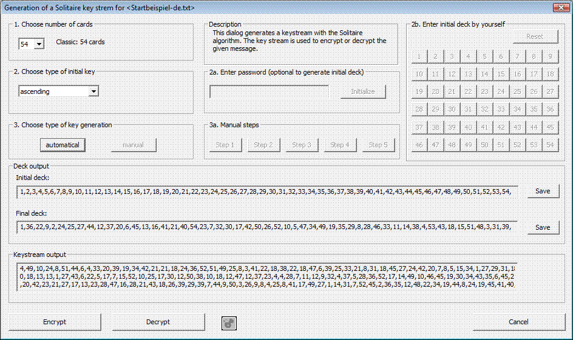

Using the dialog window of the Solitaire algorithm (Menu En- / Decrypt / Symmetric (classic))
This dialog window generates a keystream according to the Solitaire algorithm.
This keystream can be used for encryption of a plaintext as well as for decryption of a Solitaire ciphertext. After opening a plaintext or ciphertext in CrypTool as a document, select the Encrypt or Decrypt button as appropriate.
Note:CrypTool features a (partially automated cryptanalysis of Solitaire ciphertexts.
1) Key generation
Please follow the frames sequentially from 1 to 3. If you want to change something in an earlier frame, you must restart from the first frame.
Grouping 1 a: Number of cards (classic: 52 +2)
Choose the number of cards to be used in the Solitaire algorithm.
Usually 54 cards are used (the normal deck of 52 plus the two jokers). This is recommended by the algorithm's developer, Bruce Schneier, and is thus the default value.
The minimum allowed value is three, so that at least one regular card accompanies the two jokers.

Grouping 1b: Defining the cards order
Choose the preferred initial deck. There are six available options. Ascending order is selected by default.
To decrypt successfully, you must use the same initial deck as was used to encrypt.

Optional Frame: Enter password
After choosing a card order in Frame 1b, you can modify the initial deck by using a password. The password can be up to 1024 characters, and non-alphabetic characters are not allowed. After entering the password, click on Modify the initial deck. You can click the button multiple times to modify the deck further.
To decrypt, you must use the same password and click Modify the initial deck as often as was done to encrypt.
For example, if you enter the password "test" and click Modify the initial deck twice, it will have the same effect as if you used the password "testtest" just once.

Optional Frame: Manual entry
This frame is only activated if you have chosen "Manual entry" in Frame 1b. Construct your preferred initial deck by clicking the buttons 1-54 in the desired order. If you make a mistake, press Reset to start over. The button values represent the card values as described in the Solitaire description. While constructing the initial deck, you can see the current deck under "Initial deck" in the output frame. Once you have selected the appropriate number of cards as chosen in Frame 1a, this frame will be deactivated.

2) Keystream generation
Grouping 2: Generating the keystream (automatically or manually)
This frame offers two alternatives for generating the keystream.

Grouping 2 a: Manual steps of the Solitaire algorithm
This frame will be active if you selected the Manual button in Frame 2. To follow the steps of the actual Solitaire algorithm, click the buttons from step 1 to 5 in ascending order and repeat the process until each keystream characters have been generated. After each step you can see the modification of the deck in the "Final deck" output field. New keystream characters are generated only in step 5.

Note:Use the Generate remaining characters button if you decide during the process that you no longer want to carry out the process manually. In the small text field near the Step 5 button, you can see the number of generated and necessary keystream characters.
After a keystream with the same number of characters as the plaintext or ciphertext has been generated (within this dialog window at max 65,535 characters will be shown), the Encrypt, Decrypt, and Save buttons will become active.
Save
3) Encryption or Decryption using the Solitaire keystream
Encrypt
Click this button to generate the ciphertext from the plaintext.
Decrypt
Click this button to obtain the ciphertext from the plaintext.
Clicking the Encrypt or Decrypt button will automatically close the dialog window and display the newly created file in the CrypTool main window.
Cancel
Click this button to exit the dialog window.